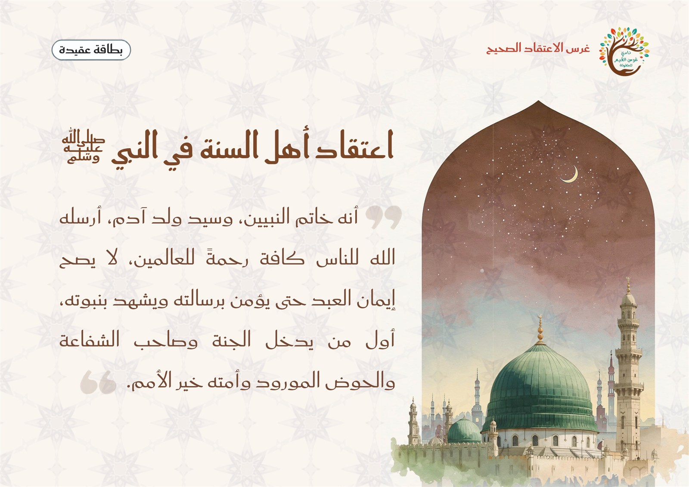
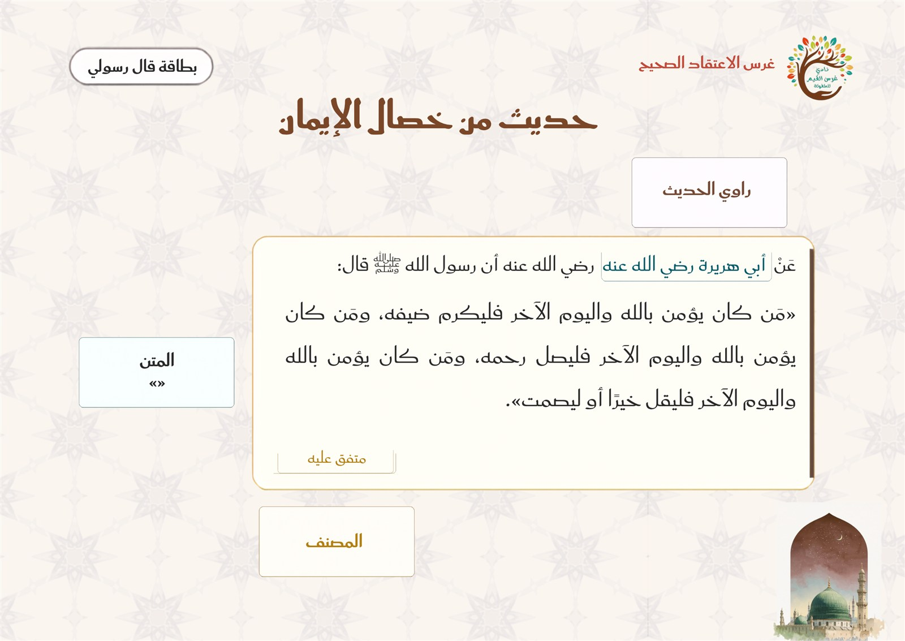

وحدة المسكن — اللقاء الأول أتعرف حديث «من خصال الإيمان» وراويه
المرحلة: تمهيدي (5–6 سنوات) · المجلس: مجلس الحديث والاقتداء · اليوم: الثالث
المدة: نصف ساعة
سؤال التركيز
كيف حفِظ اللهُ سنّةَ نبيّه ﷺ حتى وصلت إلينا، ومَن رواها وجمعها؟
بوصلةُ اللقاء: تفتح به المعلمةُ الحوار وتعود إليه عند الغلق. يقيسه سؤالُ التغذية الراجعة الأول ومؤشراتُ النجاح.
جوهر اللقاء
حفظ الله سنة نبيه ﷺ، ويسّر لها صحابةً صادقين نقلوها، وعلماءَ جمعوها في الكتب؛ فنقرأ الحديث ونعرف من رواه ومن صنّفه. راوي حديثنا أبو هريرة رضي الله عنه، وجمعه الإمام البخاري في صحيحه.
تظهر موسّعةً في «المعنى المركزي» بسير اللقاء؛ لو لم يبقَ من الدرس إلا جملةٌ فهي هذه.
ورقة التدريس السريعة — خطوات اللقاء أثناء الدرس
① بداية اللقاء ٩ د
إشارة بدء اللقاء: مقدمة منظومة السيرة، ثم جواب الإشارة.
قوانين الفصل الخمسة، ثم بطاقة «اعتقادنا في النبي ﷺ».
مراجعة سريعة: من نبينا؟ والصلاة عليه، ومعنى الحديث الميسّر.
② بناء وسير اللقاء ١٣ د
الاستماع الموقّر للحديث، ثم إعلان عنوانه «من خصال الإيمان».
الراوي أبو هريرة · المتن · المصنف الإمام البخاري (بطاقة الحديث وأقلام المعلومات).
المعنى المركزي: حفظ الله سنة نبيه ﷺ ونقلها الصحابة وجمعها العلماء.
③ إغلاق وتقويم ٨ د
النشاط المصاحب: «خريطة بطاقة الحديث» (الراوي · المتن · المصنف).
أسئلة التقويم: من الراوي؟ ما المتن؟ من المصنف؟
دعاء كفارة المجلس وختام اللقاء.
ربط الأسرة: يستمع الطفل مع أسرته إلى الحديث مرة، ويخبرهم من رواه (أبو هريرة رضي الله عنه) ومن جمعه (الإمام البخاري).
ورقةٌ مرجعية سريعة أثناء الدرس — الخطوات فقط دون الأهداف والزيادات؛ والنصّ الكامل في تبويب «دليل الدرس كامل».
مسار بداية اللقاء
① تهيئة
إشارة بدء اللقاء — منظومة الأرجوزة الميئية (السيرة النبوية)
السلام عليكم ورحمة الله وبركاته يا أحباب النبي ﷺ. نستمع الآن إلى إشارة بدء اللقاء لنعرف ماذا سيكون لقاؤنا.
منهجية الإشارة: تبدأ المعلمة بتحية الإسلام والترحيب، ثم تدعو الأطفال للاستماع دون أن تُسمّي اللقاء؛ فيستمعون إلى مقدمة لقاء الحديث — منظومة السيرة (بصوت المعلمة أو التسجيل المعتمد) ويتعرّفون على لقائهم بأنفسهم — فيرتبط كلّ لقاء بإشارته في أذهانهم — ثم تؤكّد المعلمة: «نعم، لقاؤنا الآن هو لقاء قال رسولي، نتعلّم فيه أحاديث النبي ﷺ ونقتدي به»، فيتهيّؤون للجلوس والإنصات.
▶ فيديو إشارة بدء لقاء قال رسولي — تستعين به المعلمة لضبط نغمة الإشارة (مع بقاء نصّ المنظومة ظاهرًا).
سؤال الإشارة: ما هو لقاؤنا الآن؟ جواب الأطفال: «لقاؤنا قال رسولي، نتعلم فيه أحاديث النبي ﷺ ونقتدي به».
ملاحظة للمعلمة: تُقرأ منظومة السيرة بصوت المعلمة أو من مصدر موثوق بصوت واضح — لا بصوت آلي.
افتتاح اللقاء بذكر الله
تبدأ المعلمةُ بـالبسملة والحمدلة والصلاةِ على النبيّ ﷺ، ثمّ تفتتح لقاء «قال رسولي» بذكرِ الله وطلبِ العون على محبّةِ النبيّ ﷺ واتّباعِ سنّته، وتُردّد لجذب انتباه الأطفال: «انتباه… انتباه… حان وقتُ حديثِ نبيّنا ﷺ»، فيتهيّؤون للإنصات.
الحزمُ مع الهدوء: تُدير المعلمةُ اللقاءَ بحزمٍ هادئ — صوتٌ لطيفٌ، وحدودٌ واضحة، وابتسامةٌ محتسبة — دون شدّةٍ تُنفّر ولا فوضى تُشتّت.
قوانين الفصل
🧹 أحافظ على نظافة فصليإماطة الأذى عن الطريق صدقة.
🔔 أستمع وأنصتفلا أقاطع الآخرين.
🔒 أحفظ لساني ويديالمسلم من سلم المسلمون من لسانه ويده.
🪑 أجلس جلسة صحيحةفي المساحة المخصصة لي.
💬 أرفع يدي للمشاركةالسؤال للجميع والإجابة لمن تختاره المعلمة.
الاعتقاد — اعتقادنا في النبي ﷺ
أصلٌ ثابتٌ في جميع لقاءات قال رسولي؛ تعرض المعلمة هذه البطاقة ويردّدها الأطفال معها، وتؤكد أن الله أرسل إلينا محمدًا ﷺ رحمة فنحبه ونتبعه.

بطاقة الاعتقاد في النبي ﷺ — تعرضها المعلمة في كل لقاء من لقاءات قال رسولي.
مراجعة سريعة
تراجع المعلمة مع الأطفال: من نبينا؟ وماذا نقول عندما نسمع اسم النبي محمد ﷺ؟ وما الحديث بلغة سهلة؟ ولماذا نستمع إلى حديث النبي ﷺ بأدب؟
سير اللقاء
② سير وإغلاق
المرحلة الأولى — بناء معنى مجلس الحديث: تقرأ المعلمة مقدمة اللقاء وتسأل: ما لقاؤنا؟ ثم تراجع المعنى الميسّر للحديث، وتعرض بطاقة الاعتقاد مؤكّدةً أن الله أرسل إلينا محمدًا ﷺ رحمة، وأننا نحبه ونتبعه.
أدب مجلس النبي ﷺ: تصف أدب الصحابة في مجلس النبي ﷺ: كانوا يوقّرونه ويحسنون الاستماع، ويجلسون بسكينة شديدة؛ فنقتدي بهم في مجلس الحديث.
الاستماع الأول للحديث: تعلن عنوان الحديث «من خصال الإيمان»، ثم تقرأ النص قراءة واضحة، ويستمع الأطفال للمرة الأولى: عن أبي هريرة رضي الله عنه، أن رسول الله ﷺ قال: «مَن كان يؤمن بالله واليوم الآخر فليكرم ضيفه، ومَن كان يؤمن بالله واليوم الآخر فليصل رحمه، ومَن كان يؤمن بالله واليوم الآخر فليقل خيرًا أو ليصمت». ثم تسأل سؤالًا إجماليًا واحدًا: ما الأعمال الثلاثة التي سمعناها؟ وتقبل الإجابات الأولية دون شرح تفصيلي.
المرحلة الثانية — الراوي والمتن والمصنف: يستمع الأطفال إلى الحديث مرة ثانية مع تنبيههم إلى ثلاثة أشياء: من روى؟ ما الكلام الذي قاله النبي ﷺ؟ وفي أي كتاب جُمِع؟

بطاقة الحديث التي تعرضها المعلمة — الراوي · المتن · المصنف
قراءة حديث «من خصال الإيمان» بصوت واضح
أقلام المعلومات — الراوي: تشرح المعلمة: الراوي هو الصحابي الذي سمع الحديث ونقله لمن بعده، وراوي حديثنا أبو هريرة رضي الله عنه. وتستخدم استراتيجية الأقلام بالتتابع: يختار كل طفل قلمًا، وتقرأ المعلمة المعلومة المكتوبة عليه ثم يثبّته في لوحة الراوي. من المعلومات الميسّرة: أشهر ما قيل في اسمه عبد الرحمن بن صخر الدوسي، صحابي جليل لازم النبي ﷺ، واشتهر بكثرة حفظ الحديث وروايته، وبكنية أبي هريرة بسبب هرة صغيرة كانت معه.
المتن والمصنف:المتن هو نص الحديث الذي نسمعه بعد ذكر الراوي، وتضع المعلمة بطاقة «متن» بجوار كلام النبي ﷺ. والمصنف هو العالم الذي جمع الأحاديث في كتاب، واللفظ المقرّر جمعه الإمام البخاري في «صحيح البخاري». يلصق الأطفال البطاقات الثلاث في مواضعها على لوحة الحديث.
المعنى المركزي: حفظ الله سنة نبيه ﷺ، ويسّر لها صحابةً صادقين نقلوها، وعلماءَ جمعوها في الكتب؛ فنقرأ الحديث ونعرف من رواه ومن صنّفه. راوي حديثنا أبو هريرة رضي الله عنه، وجمعه الإمام البخاري في صحيحه.
تصحيح فهم الطفل: ليس المقصود أن نحفظ كلمات «راوٍ ومتنٍ ومصنّف» حفظًا مجرّدًا؛ بل نميّزها لنوقّر سنة النبي ﷺ، ونحبّ الصحابة الذين نقلوها والعلماء الذين جمعوها. ومعرفةُ اسم الراوي أو المصنّف وسيلةٌ لتعظيم الحديث لا غايةٌ في ذاتها. ولا نصنع صورةً للنبي ﷺ أو للصحابي؛ تكفينا بطاقات الأسماء والنصوص.
جملة اللقاء الختامية: «الحمد لله الذي حفظ لنا سنة نبيه ﷺ. حديثنا رواه أبو هريرة رضي الله عنه، وجمعه الإمام البخاري في صحيحه». والجملة الجامعة: أبو هريرة الراوي، وكلام النبي هو المتن، والإمام البخاري هو المصنف.
وقفة اقتداء: حفظ الله سنة نبيه ﷺ (تربطها المعلمة بالتوقير لا بالحفظ المجرّد)
حفظ الله سنة نبيه ﷺ، ويسّر لها صحابةً صادقين نقلوها بأمانة، وعلماءَ جمعوها في الكتب؛ فوصل إلينا حديث النبي ﷺ محفوظًا نقرؤه ونعرف من رواه ومن صنّفه.
تنبيه منهجي: لا يتحوّل اللقاء إلى حفظ مصطلحات مجرّدة؛ بل يُميَّز الراوي والمتن والمصنف عبر بطاقة الحديث مع توقير السنة ومحبة الصحابة والعلماء. ولا تُستخدم صور أو تمثيلات للنبي ﷺ أو للصحابي؛ تكفي بطاقات الأسماء والنصوص.
الوسائل والصور المعروضة في اللقاء
بطاقات نشاطمطابقةعناصر الحديث ↔ ما يقابله
بطاقات عناصر الحديثللطباعة من زرّ النشاط
كتبُ الحديث المحفوظةالمصنّفاتُ التي حُفِظت فيها السنّة
بطاقة الحديثالراوي · المتن · المصنف
بطاقات الراوي والمتن والمصنفتُطابق بمواضعها على اللوحة
أقلام معلومات الراويتُثبّت حول اسم أبي هريرة رضي الله عنه
بطاقات «مطابقةُ عناصر الحديث — من خصال الإيمان» بهويّة غرس — تُطبع وتُقصّ؛ يطابق الطفلُ كلَّ عنصرٍ بما يقابله 🖨️ للطباعة الكبيرة ↗
قال رسوليمطابقةُ عناصر الحديث — من خصال الإيمانبطاقات نشاط
عناصر الحديث
الراوي
المتن
المصنِّف
ما يقابله
أبو هريرة رضي الله عنه
«مَن كان يؤمن بالله واليوم الآخر فليكرم ضيفه، ومَن كان يؤمن بالله واليوم الآخر فليصل رحمه، ومَن كان يؤمن بالله واليوم الآخر فليقل خيرًا أو ليصمت»
صحيح البخاري
خريطة بطاقة الحديث
الهدفتثبيت التمييز بين الراوي والمتن والمصنف دون تحويل المصطلحات إلى حفظ مجرّد.
الأدواتلوحة حديث مكبّرة · ثلاث بطاقات عناوين · بطاقة اسم الراوي · بطاقة نص الحديث · بطاقة اسم صحيح البخاري · أقلام المعلومات.
التهيئةتقسم المعلمة اللوحة إلى ثلاثة مواضع واضحة من اليمين إلى اليسار: الراوي – المتن – المصنف، وتقرأ العناوين أولًا.
خطوات التنفيذ
يختار الطفل بطاقة واحدة من بطاقات المحتوى.
تقرأ المعلمة البطاقة إذا احتاج الطفل إلى المساندة.
يضع الطفل البطاقة تحت العنوان المناسب.
يسمع سؤالًا قصيرًا: من روى؟ أين المتن؟ من جمع الحديث في الكتاب؟
يختار قلم معلومة عن أبي هريرة ويثبّته حول بطاقة اسمه.
تراجع المجموعة الخريطة كاملة بصوت هادئ.
أسئلة أثناء النشاط (التغذية الراجعة)
من الصحابي الراوي؟ (أبو هريرة رضي الله عنه)
ما المتن؟ (نص كلام النبي ﷺ)
من المصنف وما اسم الكتاب؟ (الإمام البخاري · صحيح البخاري)
اختيارات المعلمة حسب حاجة الطفل
الخجول: يختار بطاقة العنوان بالإشارة أو يطابق بطاقة واحدة فقط.
السريع: يشرح الفرق بين الراوي والمصنف بجملة قصيرة، أو يعيد ترتيب الخريطة بعد إخفائها.
كثير الحركة: يتولّى نقل البطاقات والأقلام إلى مواضعها بالتتابع، دون سرعة أو احتساب فوز.
الجملة الختاميةاللهم علّمنا سنة نبيك ﷺ، وارزقنا محبته واتباعه.
اختيارات الأنشطة الإضافية
تلبية الاحتياجات الفرديةالبطيء: إعادة سماع الحديث وتكرار البطاقة بلطف. الخجول: «جزاك الله خيرًا» عند أول مطابقة. النشيط: يوزّع بطاقات الراوي والمتن والمصنف ويجمعها.
الربط بالمواد الأخرىعلّمني ربي: محبة النبي ﷺ وتوقير سنته. أدب واقتداء: آداب مجلس الحديث والإنصات. لساني: نطق «الراوي · المتن · المصنف» واضحًا.
التوسيع والإثراءبيتي: يستمع مع أسرته إلى الحديث مرة، ويخبرهم من رواه. فني: تلوين بطاقة الحديث وأسماء الراوي والمصنف (بلا صور ذوات أرواح).
اقتراحات للتكرار مراجعة بطاقة الحديث والراوي والمتن والمصنف ٣ دقائق في مطلع اللقاء التالي قبل الدرس الجديد.
كفارة المجلس · خاتمة اللقاء
سبحانك اللهم وبحمدك، أشهد أن لا إله إلا أنت، أستغفرك وأتوب إليك.
العلاقة التكاملية لهذا اللقاء
الفكرة الناظمة لليوم: علّمنا النبي ﷺ أعمالًا تعمر مسكننا: إكرام الضيف الذي يأتي لزيارتنا في البيت، وصلة الأقارب من أرحامنا، والكلمة الطيبة داخل الأسرة.
سؤال اليوم: من الذي روى لنا حديث إكرام ضيف البيت وصلة الأقارب والكلمة الطيبة في المسكن؟
هذا اللقاء: قال رسولي — أتعرف حديث «من خصال الإيمان» وراويه.
كيف يتكامل هذا اللقاء مع بقية دروس اليوم والوحدة؟
التعليمُ التكامليّ = يعيشُ الطفلُ المعنى الواحد في كلّ حصص يومه؛ فلا يكون درسُ «حديث خصال الإيمان» جزيرةً منعزلة، بل خيطًا يربط القرآنَ والمسكنَ واللغةَ والأدبَ في تجربةٍ واحدة. وهذه جسورُ الربط العمليّة:
كتابي المنير — سورة الانفطار
كلامُ النبي ﷺ يشرح لنا كيف نعمل بهدي القرآن؛ فما يسمعه الطفلُ من الحديث يعمّقُ صلته بكتاب الله. حركةُ المعلمة: «النبيُّ ﷺ يعلّمنا كيف نعمل بما في كتاب الله».
علّمني ربي — جزء الاستقبال
عرف الطفلُ في علّمني أجزاءَ المسكن ومنها مكانُ استقبال الضيف؛ وإكرامُ الضيف يعمّرُ هذا الجزء. حركةُ المعلمة: «أين نستقبلُ ضيفنا في المسكن؟ نكرمُه فيه».
لساني عربي
الكلمةُ الطيبةُ التي يوجّه إليها الحديثُ تُنطقُ بلغةٍ صحيحة؛ فاللغةُ وعاءُ الكلمة الطيبة. حركةُ المعلمة: «ما الكلمةُ الطيبةُ التي نقولها لضيفنا؟».
أدب واقتداء
يترجمُ الطفلُ الحديثَ إلى سلوكٍ في المسكن: بشاشةٌ وكلمةٌ طيبة وإكرام. حركةُ المعلمة: «كيف نكرمُ من يزورنا؟ نتعلّمُ الأدبَ ونعملُ به».
الأركان
في ركن المسكن يمثّلُ الطفلُ استقبالَ ضيفٍ بكلمةٍ طيبة وإكرام؛ فيثبُتُ معنى الحديث باللعب. حركةُ المعلمة: ربطُ تمثيل الركن بإكرام الضيف.
فكرة للربط السريع
اسألي: كيف يخدم هذا اللقاء معنى اليوم؟ يهيّئ الطفل لفهم الحديث الذي يوجّه سلوكه مع أسرته وضيوف مسكنه، ويعرف أن النص وصل إلينا بنقل الصحابي وجمع العلماء بتيسير الله. توضع بطاقة الحديث في ركن أقرأ لأتعلم بجوار قصص مصوّرة عن العائلة وزيارة الأقارب، دون تصوير النبي ﷺ أو الصحابي.
التقويم في منهج غرس القيم ثلاثي المراحل — يرصد الطفل قبل الدرس وأثناءه وبعده.
التقويم القبلي
ما الحديث؟
ماذا نقول بعد اسم النبي ﷺ؟
هل تعرف اسم صحابي روى أحاديث؟
التقويم التكويني
يشير الطفل إلى اسم الراوي على البطاقة
هل يضع بطاقة «متن» بجوار نص الحديث؟
هل يختار اسم المصنف الصحيح؟
مدى إنصاته للحديث وصلاته على النبي ﷺ عند ذكره
التقويم النهائي
من راوي الحديث؟ (أبو هريرة رضي الله عنه)
من المصنف؟ (الإمام البخاري)
أين المتن؟ (نص كلام النبي ﷺ)
المعيار: تسمية الراوي والمصنف + مطابقة بطاقتين من ثلاث
مؤشرات النجاح
المؤشر المعرفي
يسمّي أبا هريرة رضي الله عنه راوي الحديث، والإمام البخاري مصنفًا للفظ المقرّر.
المؤشر المهاري
يحدّد متن الحديث على البطاقة، ويطابق بطاقتين من ثلاث بموضعيهما الصحيحين.
المؤشر الوجداني
يستمع إلى الحديث بسكينة، ويصلّي على النبي ﷺ عند ذكره، ويحبّ الصحابة والعلماء.
المؤشر التطبيقي
يذكر معلومة صحيحة واحدة عن أبي هريرة رضي الله عنه، ويضع البطاقات في مواضعها.
الآداب الصفية لحظات تربوية ذهبية — تبدأ المعلمة كل فكرة بآية أو نص حديث، ولا يعلو صوتها على النص الشرعي. الحزم مع الهدوء دائمًا.
آداب المعلمة — مقدمة الرعاية
تبدأ بالبسملة والحمدلة والدعاء: «اللهم علّمنا ما ينفعنا وانفعنا بما علّمتنا».
تنطلق كل فكرة بآية أو نص حديث شريف.
الحزم مع الهدوء — فلا يعلو صوت المعلمة على النص الشرعي.
آداب الطفل في مجلس الحديث
الجلوس بسكينة وحسن الاستماع إلى حديث النبي ﷺ.
الصلاة على النبي ﷺ عند ذكره، وعدم مقاطعة قراءة الحديث.
المحافظة على بطاقات الحديث والأدوات، والإجابة برفق.
١ · توقير حديث النبي ﷺ
الموقفعبث طفل ببطاقة الحديث وألقاها على الأرض.
الرد المقترح«بطاقة حديث النبي ﷺ نكرّمها ولا نلقيها. نرفعها برفق، ونضعها في مكانها بأدب؛ فحديث النبي ﷺ نوقّره».
القيمةتوقير السنة — المحافظة على بطاقات الحديث.
ربط بالدرس: بطاقة الحديث مدخل لتوقير السنة لا مسابقة معلومات.
٢ · الصلاة على النبي ﷺ عند ذكره
الموقفمرّ اسم النبي ﷺ ولم يصلِّ عليه الطفل.
الرد المقترح«إذا سمعنا اسم النبي محمد قلنا: صلى الله عليه وسلم؛ محبةً له وتعظيمًا. هيا نقولها معًا. جزاك الله خيرًا».
القيمةمحبة النبي ﷺ — أدب ذكره.
ربط بالدرس: من قوانين الفصل التي نلتزم بها في مجلس الحديث.
٣ · حسن الاستماع وعدم المقاطعة
الموقفتحدّث طفل مع زميله أثناء قراءة الحديث.
الرد المقترح«إذا قُرِئ حديث النبي ﷺ أنصتنا ولم نقاطع؛ نستمع بقلوبنا لكلام نبيّنا لنقتدي به. جزاك الله خيرًا».
القيمةحسن الاستماع — الإنصات لحديث النبي ﷺ.
ربط بالدرس: نستمع إلى الحديث استماعًا موقّرًا مرتين.
٤ · السكينة والوقار في الجلوس
الموقفتحرّك طفل كثيرًا وهو في مجلس الحديث.
الرد المقترح«في مجلس الحديث نجلس بسكينة ووقار كما جلس الصحابة في مجلس النبي ﷺ. اجلس هادئًا يا بطل، وستختار بطاقتك بعد قليل».
القيمةالسكينة — الوقار — الاقتداء بأدب الصحابة.
ربط بالدرس: من قوانين الفصل «أجلس جلسة صحيحة» و«أستمع وأنصت».
٥ · الانتظار وضبط النفس في النشاط
الموقفأراد طفل أن يضع كل البطاقات قبل أن يأتي دوره.
الرد المقترح«انتظر دورك يا بطل، لكلٍّ منّا بطاقة يضعها عند عنوانها. حسن الانتظار من أدب المجلس. جزاك الله خيرًا».
القيمةضبط النفس — أدب الدور — احترام المجموعة.
ربط بالدرس: نشاط «خريطة بطاقة الحديث» يتناوب فيه الأطفال.
القيمة تترسّخ حين تُعاش في البيت كما تُتعلَّم في الفصل — هذه التهيئات يُطبّقها ولي الأمر قبل الدرس وبعده.
١ · تهيئة وجدانية
أيُحدّث ولي الأمر طفله عن حبّ النبي ﷺ وتوقير حديثه، ويذكّره أن الله أرسله رحمة للعالمين.
بيقول له قبل النوم: «الحمد لله الذي حفظ لنا سنة نبيّه ﷺ».
← يربط الطفل بين الدرس ومحبته للنبي ﷺ في حياته الفعلية.
٢ · تهيئة معرفية
أيذكّره أن الحديث هو كلام النبي ﷺ، وأن الصحابة نقلوه والعلماء جمعوه في الكتب.
بيسأله بلطف: «هل تعرف اسم صحابي روى أحاديث النبي ﷺ؟»
← يرسّخ المفهوم قبل سماعه في الصف.
٣ · تهيئة حسية سمعية
أيستمع الطفل مع أسرته إلى حديث «من خصال الإيمان» مرة واحدة.
بيلفت انتباهه إلى أن الحديث رواه أبو هريرة رضي الله عنه.
← يعيش الطفل المعنى واقعيًا قبل عرضه في الصف.
٤ · تهيئة عملية بسيطة
أيجهّز مع الطفل بطاقة صغيرة مكتوب عليها اسم الراوي «أبو هريرة» ليحملها إلى الصف.
بيساعده على ترديد كلمات «الراوي · المتن · المصنف» بوضوح.
← مشاركة الأسرة تعطي الطفل حافزًا للمشاركة أمام زملائه.
٥ · تهيئة سلوكية
أيشجّع طفله على حسن الاستماع والصلاة على النبي ﷺ عند ذكره.
بيذكّره: نحافظ على بطاقات الحديث ولا نقاطع من يقرأ.
← يصبح السلوك اليومي نفسه جزءًا من الدرس.
٦ · تهيئة تعاونية أسرية
تستمع الأسرة إلى الحديث مرة واحدة، ثم تسأل الطفل: من الراوي؟ وتقول عند نجاحه: «الحمد لله الذي وفّقك للتعلم». فيتعلّم أن العائلة تعينه على معرفة سنة نبيه ﷺ.
← يزرع التعاون الأسري ومحبة سنة النبي ﷺ في وجدان الطفل.
أسئلة تطرحها على طفلك
من روى لنا هذا الحديث؟ (أبو هريرة رضي الله عنه)
ماذا نقول بعد اسم النبي ﷺ؟
ما المتن؟ (كلام النبي ﷺ في الحديث)
من جمع الحديث في كتاب؟ (الإمام البخاري)
ما اسم كتاب الإمام البخاري؟ (صحيح البخاري)
‹
أولياء أمور الفصل
غرس القيم · دليل المعلمة
اليوم
بسم الله الرحمن الرحيم 🌿
السلام عليكم ورحمة الله وبركاته
📖 تعلّم طفلكم الكريم اليوم في مادة «قال رسولي» حديث «من خصال الإيمان»: تعرّف على راويه أبي هريرة رضي الله عنه، وأن مصنّفه الإمام البخاري في «صحيح البخاري»، ومّيز بين الراوي والمتن والمصنف على بطاقة الحديث.
🏡 نشاط بيتي: استمعوا مع طفلكم إلى الحديث مرة واحدة، واسألوه: من رواه؟ وقولوا معًا: «الحمد لله الذي حفظ لنا سنة نبيّه ﷺ».
💚 جزاكم الله خيرًا على شراككم في تربية أبنائكم — فريق نادي غرس القيم
٨:٣٠ ص
اكتب رسالة…
انسخي الرسالة وأرسليها عبر واتساب أو تيليجرام — يُنسّق الغامق *هكذا* والمائل _هكذا_ تلقائيًا عند اللصق.
القيم الأساسية للدرس
محبة النبي ﷺ وتوقير سنته
إجلال حديث النبي ﷺ والاستماع إليه بأدب؛ فبطاقة الحديث مدخل لتوقير السنة لا مسابقة معلومات.
حسن الاستماع
الإنصات لحديث النبي ﷺ بقلبٍ حاضر، فنتعلّمه سماعًا موقّرًا.
فضل الصحابة والأمانة في النقل
محبة الصحابة الذين نقلوا الحديث بأمانة، والعلماء الذين جمعوه.
شكر الله على حفظ السنة
حمد الله الذي حفظ سنة نبيه ﷺ ويسّر أسباب نقلها وجمعها.
كيف تغرس المعلمة القيم أثناء الدرس؟
تربط بطاقة الحديث بتوقير سنة النبي ﷺ، لا بالحفظ المجرّد للمصطلحات.
تنمذج المحافظة على بطاقات الحديث: ترفعها برفق وتضعها في مكانها بأدب.
تُثني على حسن الإنصات والصلاة على النبي ﷺ: «أحسنتم الاستماع لحديث نبيّكم».
تُظهر شكرها لله: «الحمد لله الذي حفظ لنا سنة نبيّه ﷺ ويسّر من نقلها وجمعها».
المفاهيم الأساسية
الحديث
ما نُقل إلينا من قول النبي ﷺ أو فعله أو إقراره.
الراوي
الصحابي الذي سمع الحديث ونقله لمن بعده، وراوي حديثنا أبو هريرة رضي الله عنه.
المتن
نص الحديث الذي نسمعه بعد ذكر الراوي.
المصنف
العالم الذي جمع الأحاديث في كتاب، ومصنّف لفظنا الإمام البخاري في «صحيح البخاري».
الاستراتيجيات التعليمية
بطاقات التصنيفبطاقات الراوي والمتن والمصنف لتقريب المعلومة وتصنيفها على اللوحة.
استراتيجية الأقلاميختار كل طفل قلمًا يحمل معلومة عن الراوي، ثم يثبّته في لوحة الراوي بالتتابع.
الاستماع الموقرسماع الحديث مرتين: الأولى للنص كاملًا، والثانية للتنبيه إلى الراوي والمتن والمصنف.
السؤال والجوابأسئلة التغذية الراجعة: من روى؟ أين المتن؟ من المصنف؟
تعرضها المعلمة ويردّدها الأطفال في كل لقاء من لقاءات قال رسولي.
صوت
مقدمة لقاء الحديث — منظومة السيرة (إشارة اللقاء)
يُربط تسجيل الإشارة المعتمد في مكتبة الدليل، أو تقرؤها المعلمة.
مراجع تربوية
تربية
تعليم السنة للأطفال — طرق ووسائل
تربية الطفل على توقير حديث النبي ﷺ وحسن الاستماع إليه.
تربية
غرس محبة النبي ﷺ في الطفل (دليل عملي للمربين)
مركز دلائل – الرياض، ط3.
وقت الأركان التطبيقية
الأركان مساحاتٌ غنيّة بأدوات التعلّم، مدّتها ٣٠ دقيقة، يلعب فيها الأطفال ويستكشفون الأدوات بحرّية ومرح — لا التزام بآداب مجالس العلم كالمواد الأساسية. وتستقطع المعلمة وقتًا يسيرًا لتنفيذ نشاط تطبيقي سريع على الفكرة المركزية للدرس: التعرّف على بطاقة الحديث وتمييز راويه ومتنه ومصنفه توقيرًا لسنة النبي ﷺ. أمام المعلمة ركنان مقترحان تختار بينهما (أو تنفّذهما معًا) بحسب جاهزية البيئة.
ضابط منهجي: حفظ السنة فضل من الله، والصحابة والعلماء أسباب يسّرها الله لنقلها وجمعها. لا تُستخدم صور تجسّد النبي ﷺ أو أبا هريرة رضي الله عنه، ولا تُنسب إليهما حوارات متخيّلة، والحديث يُروى برفق؛ وتكفي بطاقات الأسماء والنصوص.
بطاقة الحديث الكبيرة، بطاقات الراوي والمتن والمصنف، بطاقة اسم أبي هريرة رضي الله عنه واسم الإمام البخاري، أقلام معلومات الراوي، لوحة عرض للحديث، سلّة قصص مصوّرة مناسبة عن العائلة وزيارة الأقارب، حامل قصص، ووسادات جلوس هادئة.
قوانين الركن
البقاء في مساحة الركن · تقليب البطاقات والكتب برفق · انتظار الدور · إعادة كل بطاقة وقصة إلى مكانها بعد الاستعمال.
اللعب الحرّ في الركن
يتصفّح الأطفال بطاقة الحديث والقصص المصوّرة بحرّية ومرح، ويتفكّرون في بطاقات الأسماء وصور البيت وزيارة الأقارب، ويعبّرون عمّا يشاهدون دون تلقين؛ فالركن مساحة لعب لا حلقة علم.
النشاط التطبيقي السريع
تستقطع المعلمة نحو ٥–٧ دقائق لتطبيق سريع على الفكرة المركزية للدرس: أتعرّف بطاقة الحديث وأميّز راويه ومتنه ومصنفه.
يطابق الطفل بطاقة الراوي والمتن والمصنف في مواضعها على لوحة الحديث.
يختار قلم معلومة واحدة عن أبي هريرة رضي الله عنه ويثبّته حول اسمه.
يتصفّح قصة عائلية مناسبة، ثم يقول: «الحمد لله الذي حفظ لنا سنة نبيه ﷺ».
هدف الركن
أن يتعرّف الطفل بطاقة الحديث ويميّز راويه ومتنه ومصنفه بهدوء فردي، ويوقّر سنة النبي ﷺ.
دور المعلمة
تتيح التصفّح الحرّ أولًا، ثم تستقطع وقتًا يسيرًا للنشاط، وتصحّح الخلط بين الراوي والمصنف برفق، وتربط القصة بعنوان الحديث بجملة قصيرة دون إطالة.
خصوصية عقدية وتربوية
حفظ السنة فضل من الله، والصحابة والعلماء أسباب يسّرها الله لنقلها وجمعها؛ لا صور تجسّد النبي ﷺ أو أبا هريرة رضي الله عنه، ولا حوارات متخيّلة تُنسب إليهم، والحديث يُروى برفق.
مناسب للفئة العمرية
خطوات قصيرة محسوسة، مع طفل أو مجموعة صغيرة في كل دورة حتى لا يزدحم الركن.
المخرج
لوحة حديث يرتّبها الطفل (راوٍ · متن · مصنف) + جملة يردّدها: الحمد لله الذي حفظ لنا سنة نبيه ﷺ.
نموذج تطبيقي للركن
بطاقة الحديث «من خصال الإيمان»يطابق الطفل الراوي والمتن والمصنف
الجملة الختامية: الحمد لله الذي حفظ لنا سنة نبيه ﷺ ووفّقنا لتعلّمها.
ألعاب بطاقة حديثي
ركن أدرك وأستمتع
الأدوات والوسائل التعليمية
بطاقة الحديث، بطاقات الراوي والمتن والمصنف، بطاقة اسم أبي هريرة رضي الله عنه واسم الإمام البخاري، بطاقات مطابقة وذاكرة، لوحة تسلسل، وأقلام معلومات الراوي.
قوانين الركن
البقاء في مساحة الركن · المحافظة على البطاقات واللوحة · انتظار الدور · إعادة كل بطاقة إلى مكانها بعد اللعب.
اللعب الحرّ في الركن
يستكشف الأطفال بطاقات المطابقة والذاكرة بحرّية ومرح، يقلّبونها ويرتّبونها كما يحبّون؛ فالركن مساحة لعب مبهجة لا حلقة علم.
النشاط التطبيقي السريع
تستقطع المعلمة دقائق يسيرة لتطبيق سريع على الفكرة المركزية: أُميّز عناصر بطاقة الحديث: الراوي والمتن والمصنف.
لعبة مطابقة/ذاكرة: يقلب الطفل بطاقة ويطابقها بعنوانها (راوٍ/متن/مصنف).
يرتّب بطاقة الراوي ثم المتن ثم المصنف في مواضعها على اللوحة.